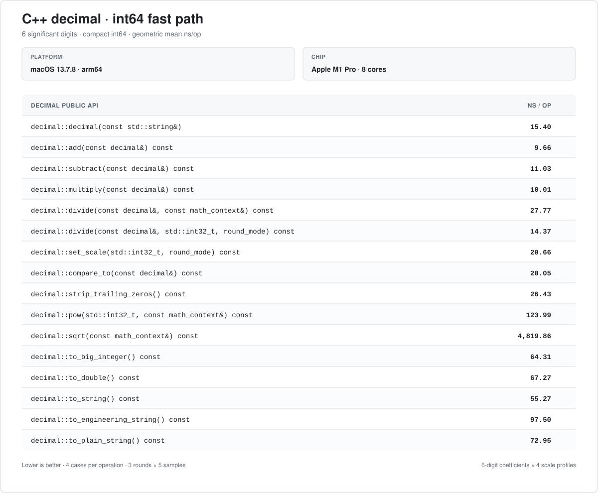

CMake
add_subdirectory(path/to/decimal)
target_link_libraries(app PRIVATE decimal::decimal)用于金额,利率,测量值和其它精确十进制计算的任意精度 C++17 纯头文件库. 本手册从选择正确的输入方式开始,详细说明 decimal 的计算,舍入,比较,转换和格式化接口.
A header-only C++17 arbitrary-precision library for money, rates, measurements, and other exact decimal calculations. This manual starts with choosing the right input and documents every application-facing decimal operation.
add_subdirectory(path/to/decimal)
target_link_libraries(app PRIVATE decimal::decimal)c++ -std=c++17 -I/path/to/decimal/include app.cc#include <decimal/decimal.h>
#include <iostream>
int main() {
const decimal unit_price("19.99");
const decimal quantity(3);
const decimal subtotal = unit_price.multiply(quantity);
std::cout << subtotal.to_plain_string() << '\n';
}59.9719.99；数量是整数，因此直接使用整数构造。19.99; the quantity is an integer and uses the integer constructor.decimal 是不可变值对象。multiply() 返回新的小计，不会修改 unit_price 或 quantity。decimal is immutable. multiply() returns a new subtotal without modifying unit_price or quantity.to_plain_string()，因为本库没有为 decimal 提供流插入运算符。to_plain_string() because the library does not provide a stream insertion operator for decimal.value = unscaled × 10-scale
123.45 的 unscaled value 是 12345，scale 是 2。
123.45 has unscaled value 12345 and scale 2.
precision 是未缩放值的有效十进制位数；123.45 的 precision 为 5。
Precision counts significant decimal digits in the unscaled value; it is 5 for 123.45.
decimal("2.0").compare_to(decimal("2.00")) == 0decimal("2.0").equals(decimal("2.00")) == false先确定输入是否必须精确,再确定结果按小数位还是有效数字舍入.
First decide whether the input must be exact, then whether the result is rounded by fractional digits or significant digits.
| 需求Need | 推荐接口Recommended API | 原因Why |
|---|---|---|
| 精确文本输入Exact text input | decimal("123.45") | 保留十进制数值和输入 scalePreserves decimal value and input scale |
| 数据库未缩放整数Database unscaled integer | value_of(12345, 2) | 直接表达 12345 × 10^-2Directly expresses 12345 × 10^-2 |
| 与浮点接口互操作Floating-point interop | value_of(double) | 使用 double 的规范文本形式Uses the canonical text form of the double |
| 保留固定小数位Fixed fractional digits | set_scale(scale, mode) | 适合金额和固定小数位协议Fits money and fixed-scale protocols |
| 限制有效数字Limit significant digits | math_context(precision, mode) | 适合连续计算和数值算法Fits chained calculations and numerical work |
| 除法必须完全精确Division must be exact | a.divide(b) | 非终止小数会抛异常Throws for a nonterminating decimal |
| 显示或 JSON 输出Display or JSON output | to_plain_string() | 不会产生指数表示Never emits exponent notation |
decimal(double). 该构造函数保留二进制浮点值的精确数值,因此 decimal(0.1) 通常不等于文本 0.1.Do not default to decimal(double) for business values. It preserves the exact binary floating-point value, so decimal(0.1) is usually not textual 0.1.下面是业务代码中最常用的入口. 表格用于快速选择函数,后面的完整示例展示结果和容易踩到的边界.
These are the usual entry points for application code. Use the table to choose an operation, then see the complete examples and pitfalls below.
| 用途Purpose | 推荐函数Recommended API | 快速示例Quick example |
|---|---|---|
| 精确构造Exact construction | decimal(text) | decimal("19.99") |
| 整数和未缩放值Integer and unscaled values | value_of() | value_of(12345, 2) |
| 加减乘Add, subtract, multiply | add(), subtract(), multiply() | price.multiply(quantity) |
| 除法Division | divide() | one.divide(three, mc) |
| 固定小数位Fixed fractional digits | set_scale() | amount.set_scale(2, mode) |
| 数值比较Numeric comparison | compare_to() | a.compare_to(b) == 0 |
| 表示相等Representation equality | equals() | a.equals(b) |
| 去除尾零Remove trailing zeros | strip_trailing_zeros() | decimal("2.00").strip_trailing_zeros() |
| 精确整数转换Exact integer conversion | to_int_exact(), to_big_integer_exact() | decimal("42.00").to_int_exact() |
| 普通字符串Plain decimal text | to_plain_string() | amount.to_plain_string() |
| 科学和工程计数Scientific and engineering notation | to_string(), to_engineering_string() | value.to_engineering_string() |
| 任意精度整数Arbitrary-precision integers | bigint | a.multiply(b).gcd(m) |
文本用于精确业务小数,整数用于计数,未缩放整数和 scale 用于数据库或协议字段.
Use text for exact business decimals, integers for counts, and an unscaled integer plus scale for database or protocol fields.
#include <decimal/decimal.h>
#include <iostream>
int main() {
const decimal price("19.90");
const decimal canonical = decimal::value_of(0.1);
const decimal database_value = decimal::value_of(12345, 2);
std::cout << price.to_plain_string() << ' '
<< canonical.to_plain_string() << ' '
<< database_value.to_plain_string() << '\n';
}19.90 0.1 123.45decimal(0.1) 保留二进制 double 的精确数值. 需要人类输入的 0.1 时使用 decimal("0.1"),与既有 double 接口互操作时通常使用 value_of(0.1).decimal(0.1) preserves the exact binary double. Use decimal("0.1") for human-entered 0.1 and normally use value_of(0.1) when interoperating with an existing double API.不带 context 的重载精确计算. 带 context 的重载限制结果的有效数字位数.
Overloads without a context calculate exactly. Context overloads limit significant digits in the result.
#include <decimal/decimal.h>
#include <iostream>
int main() {
const decimal increased = decimal("100.00").add(decimal("25.50"));
const decimal adjusted = increased.subtract(decimal("0.50"));
const decimal scaled = adjusted.multiply(decimal("1.2"));
std::cout << increased.to_plain_string() << ' '
<< adjusted.to_plain_string() << ' '
<< scaled.to_plain_string() << '\n';
}125.50 125.00 150.000decimal 是不可变值对象,这些函数都返回新值. 精确乘法的结果 scale 是两个输入 scale 之和,因此结果可能保留额外的零.decimal is immutable, so every operation returns a new value. Exact multiplication adds input scales and may preserve additional zeros.精确除法适合有限十进制结果. 非终止结果必须给出目标 scale 或有限精度 context.
Exact division is for terminating decimal results. Nonterminating results require a target scale or finite-precision context.
#include <decimal/decimal.h>
#include <iostream>
int main() {
const decimal exact = decimal("1").divide(decimal("8"));
const decimal repeating = decimal("1").divide(
decimal("3"), math_context(8, round_mode::HALF_EVEN));
const decimal posted = decimal("10.005").set_scale(2, round_mode::HALF_UP);
std::cout << exact.to_plain_string() << ' '
<< repeating.to_plain_string() << ' '
<< posted.to_plain_string() << '\n';
}0.125 0.33333333 10.01decimal("1").divide(decimal("3")) 无法返回有限的精确小数,因此会抛异常. 降低 scale 也可能丢弃非零数字,应明确选择舍入模式.decimal("1").divide(decimal("3")) cannot return a finite exact decimal and throws. Reducing scale can also discard nonzero digits, so choose a rounding mode explicitly.compare_to() 比较数学值,equals() 比较数值和 scale. 两种语义都保留是为了让调用方明确选择.
compare_to() compares mathematical values, while equals() compares both value and scale. Both are available so callers choose the intended semantics.
#include <decimal/decimal.h>
#include <iostream>
int main() {
const decimal first("2.0");
const decimal second("2.00");
std::cout << std::boolalpha
<< (first.compare_to(second) == 0) << ' '
<< first.equals(second) << ' '
<< first.strip_trailing_zeros().equals(second.strip_trailing_zeros()) << '\n';
}true false trueequals() 判断只关心金额数值的相等关系. 如果 scale 不属于业务身份,使用 compare_to() == 0.Do not use equals() when only the numeric amount matters. If scale is not part of business identity, use compare_to() == 0.exact 整数转换用于拒绝非零小数和范围溢出. 字符串函数根据是否允许指数表示进行选择.
Exact integer conversions reject nonzero fractions and range overflow. Choose a string function based on whether exponent notation is allowed.
#include <decimal/decimal.h>
#include <iostream>
int main() {
const std::int32_t count = decimal("42.00").to_int_exact();
const bigint whole = decimal("123.45").to_big_integer();
const decimal small("0.000000123");
std::cout << count << ' ' << whole.to_string() << '\n';
std::cout << small.to_string() << ' ' << small.to_plain_string() << '\n';
}42 123
1.23E-7 0.000000123to_int() 和 to_long() 会截掉小数,超范围时还可能只保留低位. to_string() 可能产生科学计数法,金额,JSON 和 UI 通常使用 to_plain_string().to_int() and to_long() truncate fractions and may retain only low bits when out of range. to_string() may emit scientific notation; money, JSON, and UI output usually use to_plain_string().精确整数转换Exact integer conversions · to_big_integer() · 字符串格式String formats
当问题本身只需要整数时直接使用 bigint,避免人为引入 decimal scale.
Use bigint directly when the problem is purely integral instead of introducing a decimal scale.
#include <decimal/decimal.h>
#include <iostream>
int main() {
const bigint value("12345678901234567890");
const bigint ten(10);
std::cout << value.add(ten).to_string() << '\n';
std::cout << value.divide(ten).to_string() << '\n';
std::cout << value.gcd(bigint(90)).to_string() << '\n';
std::cout << bigint(12).pow(5).to_string() << '\n';
}12345678901234567900
1234567890123456789
90
248832bigint 没有小数和 scale. 需要小数点时,使用 decimal(bigint_value, scale) 明确指定 scale.bigint has no fraction or scale. When a decimal point is required, use decimal(bigint_value, scale) and provide the scale explicitly.三个看似相同的 0.1 表达不同意图. 选择入口时应判断数据最初来自十进制文本,还是已经存在于二进制浮点变量中.
Three apparently identical forms of 0.1 express different intent. Choose based on whether the value originates as decimal text or already exists in a binary floating-point variable.
| 入口Entry point | 得到的数值Resulting value | 适用场景Use it for |
|---|---|---|
decimal("0.1") | 精确十进制 0.1,并保留文本 scaleExact decimal 0.1 with text scale preserved | 金额,利率,配置,数据库和协议字段Money, rates, configuration, databases, and protocols |
decimal(0.1) | 该 binary64 数值的完整精确十进制值The complete exact decimal value of that binary64 value | 审计,复现或无损保存已有 doubleAuditing, reproducing, or losslessly preserving an existing double |
decimal::value_of(0.1) | double 的最短可往返十进制文本The shortest round-trippable decimal text for the double | 与现有 double API 互操作Interoperating with an existing double API |
value.to_double() | 最接近的 double,可能损失精度,下溢或变成 infinityThe nearest double, possibly losing precision, underflowing, or becoming infinity | 图表,统计库和必须接收 double 的外部接口Charts, statistics libraries, and APIs that require double |
#include <decimal/decimal.h>
#include <iostream>
int main() {
const double input = 0.1;
const decimal text("0.1");
const decimal exact_binary(input);
const decimal canonical = decimal::value_of(input);
std::cout << text.to_plain_string() << '\n';
std::cout << exact_binary.to_plain_string() << '\n';
std::cout << canonical.to_plain_string() << '\n';
std::cout << std::boolalpha << (exact_binary.to_double() == input) << '\n';
}0.1
0.1000000000000000055511151231257827021181583404541015625
0.1
trueto_double() 和重新构造 decimal.Do not parse decimal text into a double before constructing decimal; that loses decimal information early. Do not repeatedly call to_double() and reconstruct decimal during money calculations.decimal 不表示 NaN 或 infinity. 两种 double 入口都会拒绝这些输入. 反向转换 to_double() 不抛出范围异常,而是遵循浮点转换结果,可能得到 infinity 或带符号的零.
decimal does not represent NaN or infinity, and both double entry points reject them. The reverse to_double() conversion does not throw for range; it follows floating-point conversion and may produce infinity or signed zero.
#include <decimal/decimal.h>
#include <cmath>
#include <iostream>
#include <limits>
#include <stdexcept>
int main() {
try {
static_cast<void>(decimal(std::numeric_limits<double>::infinity()));
} catch (const std::runtime_error&) {
std::cout << "infinity rejected\n";
}
try {
static_cast<void>(decimal::value_of(std::numeric_limits<double>::quiet_NaN()));
} catch (const std::runtime_error&) {
std::cout << "nan rejected\n";
}
std::cout << std::boolalpha
<< std::isinf(decimal("1E+10000").to_double()) << '\n'
<< (decimal("1E-10000").to_double() == 0.0) << '\n';
}infinity rejected
nan rejected
true
true表格只列应用层公开接口能够稳定观察到的异常类型. 异常消息属于当前实现细节,调用方应按异常类型和自己的业务上下文生成错误信息.
This table lists stable exception types observable from application-facing public APIs. Exception messages are implementation details; callers should report errors using the exception type and their own domain context.
| 函数API | 异常Exception | 触发条件Trigger | 安全用法Safe usage |
|---|---|---|---|
decimal(text) | std::runtime_error | 空输入,没有数字,非法字符,多个小数点或非法/溢出指数Empty input, no digits, illegal characters, repeated decimal points, or malformed/overflowing exponentsdecimal("1.2.3") | 在记录边界校验并捕获解析错误Validate and catch parsing failures at the record boundary |
decimal(chars, offset, length) | std::runtime_error | length <= 0 或所选字符格式非法length <= 0 or malformed selected characters | 调用方必须先保证 buffer,offset 和 length 指向有效内存范围The caller must first guarantee that buffer, offset, and length identify valid memory |
decimal(double), value_of(double) | std::runtime_error | 输入为 NaN 或正负 infinityInput is NaN or positive/negative infinity | std::isfinite(value) |
math_context(precision) | std::invalid_argument | precision < 0precision < 0 | 0 表示不限精度,正数表示有效数字位数Zero means unlimited precision; positive values count significant digits |
value_of(int mode), legacy rounding overloads | std::invalid_argument | 整数舍入模式不在 0 到 7Integer rounding mode is outside 0 through 7 | 新代码直接使用 round_mode 枚举Use the round_mode enum in new code |
divide(), quotient/remainder APIs | std::runtime_error | 除数为零,包括未定义的 0 / 0Zero divisor, including undefined 0 / 0decimal("1").divide(decimal::ZERO) | 调用前验证 divisor 非零Check that the divisor is nonzero |
divide() exact overload | std::runtime_error | 结果为非终止十进制,例如 1 / 3The result is nonterminating, such as 1 / 3 | 传入目标 scale 和模式,或有限精度 math_contextPass a target scale and mode or a finite-precision math_context |
divide_to_integral_value(divisor, mc) | std::runtime_error | context precision 无法容纳整数商Context precision cannot hold the integer quotient | 提高 precision 或使用无 context 重载Increase precision or use the overload without a context |
set_scale(), rounding APIs | std::runtime_error | UNNECESSARY 下必须丢弃非零数字Nonzero digits must be discarded under UNNECESSARYdecimal("1.1").set_scale(0) | 允许舍入时显式传入模式Pass an explicit mode when rounding is allowed |
move_point_*(), scale_by_power_of_ten() | std::runtime_error | scale 计算超出 std::int32_t 范围Scale calculation exceeds the std::int32_t range | 限制外部位移参数和指数范围Bound externally supplied shifts and exponents |
to_*_exact() | std::runtime_error | 存在非零小数或超出目标整数范围A nonzero fraction exists or the target integer range is exceededdecimal("42.5").to_int_exact() | 只在数据契约要求整数时使用 exact 转换并捕获错误Use exact conversion when the data contract requires an integer and catch rejection |
decimal::pow() | std::invalid_argument | 精确重载使用负指数,指数超出支持范围,或 context precision 不足A negative exponent reaches the exact overload, the exponent is unsupported, or context precision is insufficient | 负指数使用有限精度 context,并限制外部指数Use a finite-precision context for negative exponents and bound external exponents |
decimal::sqrt() | std::runtime_error | 输入为负数,或无限精度/UNNECESSARY 要求无法得到的精确根Input is negative, or unlimited precision/UNNECESSARY requires an unavailable exact root | 先检查符号,无理数根使用有限精度 contextCheck the sign and use finite precision for irrational roots |
bigint(text, radix) | std::invalid_argument | 空输入,非法符号或数字,radix 不在 2 到 36Empty input, illegal sign/digit, or radix outside 2 through 36 | 在输入边界验证 radix 和文本Validate radix and text at the input boundary |
bigint::divide(), remainder() | std::runtime_error | 除数为零Divisor is zero | 调用前检查 is_zero()Check is_zero() first |
bigint::pow() | std::runtime_error | 指数为负数Exponent is negative | 整数幂只传入非负指数Pass only nonnegative exponents for integer powers |
bigint::sqrt() | std::runtime_error | 输入为负数Input is negative | 先检查 signum() >= 0Check signum() >= 0 first |
mod(), mod_inverse(), mod_pow() | std::runtime_error | 模数非正,或所需乘法逆元不存在Modulus is nonpositive or a required multiplicative inverse does not exist | 使用正模数;求逆前确认 gcd 为 1Use a positive modulus and require GCD one before inversion |
test_bit(), set_bit(), clear_bit(), flip_bit() | std::runtime_error | bit 下标为负数Bit index is negative | 验证 index >= 0Require index >= 0 |
to_int(),to_long() 和 to_double() 是非 exact 转换. 它们可能截断,回绕,损失精度,下溢或返回 infinity,通常不会为这些情况抛异常.to_int(), to_long(), and to_double() are non-exact conversions. They may truncate, wrap, lose precision, underflow, or return infinity and normally do not throw for those outcomes.#include <decimal/decimal.h>
#include <iostream>
#include <stdexcept>
#include <utility>
template <typename Function>
void report(const char* name, Function&& function) {
try {
function();
} catch (const std::invalid_argument&) {
std::cout << name << ": invalid_argument\n";
} catch (const std::runtime_error&) {
std::cout << name << ": runtime_error\n";
}
}
int main() {
report("decimal text", [] { static_cast<void>(decimal("1.2.3")); });
report("math context", [] { static_cast<void>(math_context(-1)); });
report("decimal divide", [] { static_cast<void>(decimal("1").divide(decimal::ZERO)); });
report("exact divide", [] { static_cast<void>(decimal("1").divide(decimal("3"))); });
report("scale", [] { static_cast<void>(decimal("1.1").set_scale(0)); });
report("exact integer", [] { static_cast<void>(decimal("1.1").to_int_exact()); });
report("decimal power", [] { static_cast<void>(decimal("2").pow(-1)); });
report("decimal root", [] { static_cast<void>(decimal("-1").sqrt(math_context::DECIMAL64)); });
report("bigint text", [] { static_cast<void>(bigint("10", 1)); });
report("bigint divide", [] { static_cast<void>(bigint(1).divide(bigint::ZERO)); });
report("bigint power", [] { static_cast<void>(bigint(2).pow(-1)); });
report("bigint root", [] { static_cast<void>(bigint(-1).sqrt()); });
report("bigint modulus", [] { static_cast<void>(bigint(2).mod(bigint::ZERO)); });
report("bigint bit", [] { static_cast<void>(bigint(1).test_bit(-1)); });
}decimal text: runtime_error
math context: invalid_argument
decimal divide: runtime_error
exact divide: runtime_error
scale: runtime_error
exact integer: runtime_error
decimal power: invalid_argument
decimal root: runtime_error
bigint text: invalid_argument
bigint divide: runtime_error
bigint power: runtime_error
bigint root: runtime_error
bigint modulus: runtime_error
bigint bit: runtime_errormath_context(precision, mode) 控制一次运算最多保留多少位有效数字；round_mode 决定丢弃部分如何处理。它们只是调用 decimal 函数时需要的参数。
math_context(precision, mode) limits significant digits for an operation; round_mode decides how discarded digits are handled. They are supporting arguments to decimal operations.
| Mode | 行为Behavior | 2.5 → integer |
|---|---|---|
UP | 远离零Away from zero | 3 |
DOWN | 向零截断Toward zero | 2 |
CEILING / FLOOR | 向正/负无穷Toward +/− infinity | 3 / 2 |
HALF_UP | 五入Ties away from zero | 3 |
HALF_DOWN | 五舍Ties toward zero | 2 |
HALF_EVEN | 银行家舍入Ties to even | 2 |
UNNECESSARY | 禁止发生舍入Rounding forbidden | 抛异常throws |
math_context money(12, round_mode::HALF_EVEN);
decimal result = decimal("1").divide(decimal("3"), money); // 0.333333333333优先使用字符串构造精确的小数字面值，使用整数构造计数值。
Prefer strings for exact decimal literals and integer constructors for counts.
从字符串、整数、浮点数或“未缩放整数 + scale”创建数值。下面逐项列出头文件提供的构造重载。
Creates a value from text, integers, floating point, or an unscaled integer plus scale. Every constructor overload from the header is listed below.
decimal();
decimal(const char* text);
decimal(const char* text, const math_context& mc);
decimal(const char* text, std::int32_t offset, std::int32_t length,
const math_context& mc = math_context::UNLIMITED);
decimal(const std::string& text);
decimal(const std::string& text, const math_context& mc);
decimal(std::string_view text);
decimal(std::string_view text, const math_context& mc);
decimal(std::int32_t value);
decimal(std::int32_t value, const math_context& mc);
decimal(std::int64_t value);
decimal(std::int64_t value, const math_context& mc);
decimal(double value);
decimal(double value, const math_context& mc);
decimal(const bigint& value);
decimal(const bigint& value, const math_context& mc);
decimal(const bigint& unscaled, std::int32_t scale);
decimal(const bigint& unscaled, std::int32_t scale, const math_context& mc);此外支持默认的复制构造、移动构造、复制赋值和移动赋值。带 bigint 的重载用于超过 64 位的未缩放整数；普通业务输入通常不需要直接使用它。
Default copy/move construction and copy/move assignment are also supported. The bigint overloads accept unscaled integers beyond 64 bits and are rarely needed for ordinary input.
decimal empty; // 0
decimal exact("123.4500"); // 保留 scale 4
decimal count(std::int64_t{42}); // 42
decimal rounded("1.2345", math_context(3, round_mode::HALF_UP)); // 1.23decimal(0.1) 表示该二进制 double 的精确值，通常不是文本意义上的 0.1。业务小数请写 decimal("0.1")。decimal(0.1) preserves the exact binary double, usually not textual 0.1. Use decimal("0.1") for business values.从整数、double 或未缩放值快速创建 decimal。value_of(double) 使用 double 的规范文本形式，比直接 double 构造更符合日常预期。带 precision 的形式主要供库内部复用已知精度。
Creates a value from an integer, double, or unscaled value. value_of(double) uses the canonical text form and is usually less surprising than the direct double constructor. Precision-bearing forms mainly reuse known precision internally.
static decimal value_of(std::int64_t value);
static decimal value_of(double value);
static decimal value_of(std::int64_t unscaled, std::int32_t scale);
static decimal value_of(std::int64_t unscaled, std::int32_t scale,
std::int32_t precision);
static decimal value_of(const bigint& unscaled, std::int32_t scale,
std::int32_t precision);decimal a = decimal::value_of(250); // 250
decimal b = decimal::value_of(12345, 2); // 123.45
decimal c = decimal::value_of(0.1); // 0.1复用常见不可变常量，避免重复构造。
Reuse common immutable values without reconstructing them.
decimal::ZERO; decimal::ONE; decimal::TWO; decimal::TEN;
decimal::ONE_TENTH; decimal::ONE_HALF;decimal percentage = decimal::ONE_TENTH.multiply(decimal(15)); // 1.5返回两数之和；不带 context 时精确计算，结果通常采用两者较大的 scale。
Returns the sum. Without a context it is exact and normally uses the larger input scale.
decimal add(const decimal& augend) const;
decimal add(const decimal& augend, const math_context& mc) const;decimal total = decimal("12.30").add(decimal("0.45")); // 12.75
decimal short_sum = decimal("123.4").add(decimal("0.06"), math_context(3)); // 123返回当前值减去 subtrahend 的结果；context 重载在运算后限制有效位数。
Returns this value minus subtrahend; the context overload limits significant digits.
decimal subtract(const decimal& subtrahend) const;
decimal subtract(const decimal& subtrahend, const math_context& mc) const;decimal balance = decimal("100.00").subtract(decimal("36.75")); // 63.25返回乘积；精确重载的结果 scale 是两个输入 scale 之和。
Returns the product; the exact overload adds the two input scales.
decimal multiply(const decimal& multiplicand) const;
decimal multiply(const decimal& multiplicand, const math_context& mc) const;decimal subtotal = decimal("19.99").multiply(decimal(3)); // 59.97
decimal tax = subtotal.multiply(decimal("0.13"), math_context(8));返回商。选择重载的关键是：结果必须完全精确、沿用当前 scale、固定目标 scale，还是固定有效位数。整数舍入模式重载是兼容接口，新代码优先使用 round_mode。
Returns a quotient. Choose an overload based on exactness, the current scale, a target scale, or significant-digit precision. Integer rounding-mode overloads are compatibility APIs; prefer round_mode in new code.
decimal divide(const decimal& divisor) const;
decimal divide(const decimal& divisor, round_mode mode) const;
decimal divide(const decimal& divisor, std::int32_t legacy_mode) const;
decimal divide(const decimal& divisor, std::int32_t scale,
round_mode mode) const;
decimal divide(const decimal& divisor, std::int32_t scale,
std::int32_t legacy_mode) const;
decimal divide(const decimal& divisor, const math_context& mc) const;| 需求Need | 调用Call |
|---|---|
| 可终止的精确小数Exact terminating decimal | a.divide(b) |
| 沿用被除数 scaleUse dividend scale | a.divide(b, HALF_UP) |
| 固定 2 位小数Exactly 2 fractional digits | a.divide(b, 2, HALF_UP) |
| 最多 12 位有效数字Up to 12 significant digits | a.divide(b, math_context(12, HALF_EVEN)) |
decimal exact = decimal("1").divide(decimal("4")); // 0.25
decimal money = decimal("10").divide(decimal("3"), 2, round_mode::HALF_UP); // 3.33
decimal calc = decimal("1").divide(decimal("3"), math_context(6)); // 0.3333331 / 3 没有有限十进制展开，调用无参数舍入的精确重载会抛异常；除数为零也会抛异常。1 / 3 has no terminating decimal expansion, so the exact overload throws. Division by zero also throws.返回除法结果的整数部分，不进行普通意义的四舍五入；context 只限制整数商允许的精度。
Returns the integer part of a quotient without conventional rounding; a context limits the quotient precision.
decimal divide_to_integral_value(const decimal& divisor) const;
decimal divide_to_integral_value(const decimal& divisor, const math_context& mc) const;decimal boxes = decimal("17").divide_to_integral_value(decimal("5")); // 3返回 this - divide_to_integral_value(divisor) × divisor。结果可能为负，不等同于始终非负的数学模。
Returns this - divide_to_integral_value(divisor) × divisor. It may be negative and is not a nonnegative mathematical modulo.
decimal remainder(const decimal& divisor) const;
decimal remainder(const decimal& divisor, const math_context& mc) const;decimal left = decimal("17").remainder(decimal("5")); // 2一次返回整数商和余数，避免分别计算。
Returns the integer quotient and remainder together, avoiding separate calculations.
std::pair<decimal, decimal> divide_and_remainder(const decimal&) const;
std::pair<decimal, decimal> divide_and_remainder(const decimal&, const math_context&) const;auto [quotient, remainder] = decimal("17").divide_and_remainder(decimal("5"));
// quotient = 3, remainder = 2设置小数点右侧位数。增加 scale 只补零；减少 scale 可能丢弃数字，因此通常应显式给出舍入模式。整数模式是兼容重载。
Sets digits to the right of the decimal point. Increasing scale appends zeros; decreasing it may discard digits and should normally specify a rounding mode. The integer mode is a compatibility overload.
decimal set_scale(std::int32_t new_scale) const;
decimal set_scale(std::int32_t new_scale, round_mode mode) const;
decimal set_scale(std::int32_t new_scale, std::int32_t legacy_mode) const;decimal cents = decimal("12.345").set_scale(2, round_mode::HALF_UP); // 12.35
decimal padded = decimal("12").set_scale(2); // 12.00plus() 不带参数时返回同值；plus(mc) 和 round(mc) 都按 context 舍入，适合在计算边界统一精度。
plus() without arguments preserves the value; plus(mc) and round(mc) round to a context, useful at calculation boundaries.
decimal plus() const;
decimal plus(const math_context& mc) const;
decimal round(const math_context& mc) const;decimal x("123.456");
decimal a = x.round(math_context(4, round_mode::HALF_EVEN)); // 123.5
decimal b = x.plus(math_context(3, round_mode::DOWN)); // 123按十进制位数移动小数点；参数为负数时方向反转。
Moves the decimal point by a decimal digit count; a negative argument reverses direction.
decimal move_point_left(std::int32_t n) const;
decimal move_point_right(std::int32_t n) const;decimal x("123.45");
x.move_point_left(2); // 1.2345
x.move_point_right(2); // 12345返回 this × 10^n，通过调整 scale 实现，适合单位换算。
Returns this × 10^n by adjusting scale, useful for unit conversion.
decimal scale_by_power_of_ten(std::int32_t n) const;decimal("1.25").scale_by_power_of_ten(3); // 1250移除表示中的十进制尾随零，同时保持数值不变；零会规范为 scale 0。
Removes representational trailing decimal zeros while preserving numeric value; zero is normalized to scale 0.
decimal strip_trailing_zeros() const;decimal x = decimal("123.4500").strip_trailing_zeros(); // 123.45, scale 2返回绝对值；context 重载同时对结果舍入。
Returns the absolute value; the context overload also rounds the result.
decimal abs() const;
decimal abs(const math_context& mc) const;decimal("-12.30").abs(); // 12.30返回符号相反的数；零仍为零。
Returns the value with its sign reversed; zero remains zero.
decimal negate() const;
decimal negate(const math_context& mc) const;decimal("12.30").negate(); // -12.30计算整数次幂。无 context 重载只接受非负指数；context 重载允许负指数并按指定精度计算倒数。
Raises the value to an integer power. The exact overload accepts nonnegative exponents; the context overload also supports negative exponents using rounded reciprocals.
decimal pow(std::int32_t exponent) const;
decimal pow(std::int32_t exponent, const math_context& mc) const;decimal("1.05").pow(2); // 1.1025
decimal("2").pow(-3, math_context(8)); // 0.125按 context 返回平方根。负数抛异常；无限精度或 UNNECESSARY 要求结果能够精确表示。
Returns a square root under a context. Negative inputs throw; unlimited precision or UNNECESSARY requires an exact result.
decimal sqrt(const math_context& mc) const;decimal root = decimal("2").sqrt(math_context(16, round_mode::HALF_EVEN));
// 1.414213562373095signum() 返回 -1、0 或 1；is_zero() 是直接判断零的便捷函数。
signum() returns -1, 0, or 1; is_zero() is the direct zero check.
std::int32_t signum() const;
bool is_zero() const;decimal("-0.01").signum(); // -1
decimal("0.00").is_zero(); // true读取表示属性。scale 是小数位数，precision 是未缩放值的有效数字位数。
Reads representation properties. Scale is the fractional digit count; precision is the significant digit count of the unscaled value.
std::int32_t scale() const;
std::int32_t precision() const;decimal x("123.4500");
// x.scale() == 4; x.precision() == 7读取未缩放整数。任意精度版本返回 bigint；long 版本适合已知范围较小的数据，exact 版本在溢出时抛异常。
Reads the unscaled integer. The arbitrary-precision form returns bigint; long forms suit known-small values, and the exact form throws on overflow.
bigint unscaled_value() const;
std::int64_t unscaled_long_value() const;
std::int64_t unscaled_long_value_exact() const;decimal x("123.45");
std::int64_t raw = x.unscaled_long_value_exact(); // 12345compare_to 比较实际数值；compare_magnitude 忽略正负号。返回负数、0、正数分别表示小于、等于、大于。
compare_to compares numeric values; compare_magnitude ignores signs. Negative, zero, and positive results mean less than, equal, and greater than.
std::int32_t compare_to(const decimal& value) const;
std::int32_t compare_magnitude(const decimal& value) const;decimal("2.0").compare_to(decimal("2.00")); // 0
decimal("-9").compare_magnitude(decimal("3")); // positive只有数值和 scale 都相同才返回 true。用于比较业务数值时通常应使用 compare_to() == 0。
Returns true only when both numeric value and scale match. For business-value comparison, usually use compare_to() == 0.
bool equals(const decimal& other) const;decimal("2.0").equals(decimal("2.00")); // false返回两个值中的较小值或较大值。
Returns the smaller or larger of two values.
decimal min(const decimal& value) const;
decimal max(const decimal& value) const;decimal cap("100");
decimal charged = decimal("125").min(cap); // 100hash_code() 与表示相等语义一致；ulp() 返回当前 scale 下的一个末位单位。
hash_code() follows representational equality; ulp() returns one unit in the last place at the current scale.
std::int32_t hash_code() const;
decimal ulp() const;decimal("12.34").ulp(); // 0.01转换为任意精度整数。普通版本截掉小数；exact 版本遇到非零小数部分时抛异常。
Converts to an arbitrary-precision integer. The normal form truncates fractions; the exact form throws for a nonzero fractional part.
bigint to_big_integer() const;
bigint to_big_integer_exact() const;decimal("12.90").to_big_integer(); // 12
decimal("12.00").to_big_integer_exact(); // 12截掉小数部分并转换为固定宽度整数；超范围时只保留低位。若不能接受静默截断或回绕，请使用 exact 版本。
Truncates the fraction and converts to a fixed-width integer; out-of-range values retain low bits. Use exact forms when silent truncation or wrapping is unacceptable.
std::int32_t to_int() const;
std::int64_t to_long() const;decimal("42.99").to_int(); // 42
decimal("-8.75").to_long(); // -8精确转换为 8、16、32 或 64 位整数。存在非零小数或超出目标范围时抛异常。
Exactly converts to an 8-, 16-, 32-, or 64-bit integer. Throws for a nonzero fraction or target-range overflow.
std::int8_t to_byte_exact() const;
std::int16_t to_short_exact() const;
std::int32_t to_int_exact() const;
std::int64_t to_long_exact() const;std::int32_t count = decimal("42.00").to_int_exact(); // 42
// decimal("42.5").to_int_exact() throws转换为二进制浮点数，可能损失精度；过大时可能得到无穷值。不要用它作为金额计算的中间步骤。
Converts to binary floating point, possibly losing precision; huge values may become infinity. Avoid it as an intermediate step in money calculations.
float to_float() const;
double to_double() const;double chart_value = decimal("12.34").to_double();返回规范字符串，数值很大、很小或 scale 特殊时可能使用科学计数法。
Returns the canonical representation, using scientific notation for large, small, or specially scaled values when appropriate.
std::string to_string() const;decimal("0.000000123").to_string(); // 1.23E-7返回工程计数法字符串，指数始终是 3 的倍数，便于对应 SI 单位前缀。
Returns engineering notation whose exponent is a multiple of three, convenient for SI prefixes.
std::string to_engineering_string() const;decimal("0.000000123").to_engineering_string(); // 123E-9始终返回普通十进制字符串，不产生指数字段。金额、JSON 文本和 UI 输出通常优先使用它。
Always returns a plain decimal string without an exponent. It is usually preferred for money, JSON text, and UI output.
std::string to_plain_string() const;decimal("1.23E+4").to_plain_string(); // 12300本节中的每段代码都解决一个明确问题，是独立、完整的 C++17 程序，并参与文档回归编译。代码下方的输出来自程序实际运行结果。
Each listing solves one focused problem, is a standalone C++17 program, and is compiled in documentation regression checks. Output blocks show the program's actual result.
operator<<(std::ostream&, const decimal&)。输出 decimal 时请显式调用 to_plain_string()、to_string() 或 to_engineering_string()。The library does not currently define operator<<(std::ostream&, const decimal&). Explicitly call to_plain_string(), to_string(), or to_engineering_string() when streaming a decimal.展示字符串、整数、context 和未缩放值构造。
String, integer, context, and unscaled-value construction.
#include <decimal/decimal.h>
#include <iostream>
int main() {
const decimal text("123.4500");
const decimal integer(std::int64_t{42});
const math_context context(3, round_mode::HALF_UP);
const decimal rounded("1.2345", context);
const decimal unscaled = decimal::value_of(12345, 2);
std::cout << text.to_plain_string() << ' '
<< integer.to_plain_string() << ' '
<< rounded.to_plain_string() << ' '
<< unscaled.to_plain_string() << '\n';
}123.4500 42 1.23 123.45123.4500 的四个小数位不会自动消失。123.4500 remain.math_context(3, HALF_UP) 将 1.2345 限制为三位有效数字，结果为 1.23。math_context(3, HALF_UP) limits 1.2345 to three significant digits, producing 1.23.value_of(12345, 2) 表示 12345 × 10^-2，即 123.45。value_of(12345, 2) means 12345 × 10^-2, or 123.45.精确运算和 context 运算可以按业务边界组合。
Exact and context-limited operations can be combined at business boundaries.
#include <decimal/decimal.h>
#include <iostream>
int main() {
const decimal left("12.30");
const decimal right("0.45");
const math_context context(5, round_mode::HALF_EVEN);
const decimal sum = left.add(right);
const decimal difference = left.subtract(right);
const decimal product = left.multiply(right, context);
std::cout << sum.to_plain_string() << '\n';
std::cout << difference.to_plain_string() << '\n';
std::cout << product.to_plain_string() << '\n';
}12.75
11.85
5.53505.5350 保留四位 scale，因为乘法结果的 scale 等于两个输入 scale 之和。5.5350 retains scale four because product scale is the sum of the two input scales.展示精确商、固定 scale、有限精度、整数商、余数和成对返回。
Exact, fixed-scale, finite-precision, integral, remainder, and paired division.
#include <decimal/decimal.h>
#include <iostream>
int main() {
const decimal one("1");
const decimal three("3");
const decimal exact = one.divide(decimal("4"));
const decimal fixed_scale = decimal("10").divide(
three, 2, round_mode::HALF_UP);
const decimal finite_precision = one.divide(three, math_context(6));
const decimal dividend("17");
const decimal divisor("5");
const decimal integer_quotient = dividend.divide_to_integral_value(divisor);
const decimal remainder = dividend.remainder(divisor);
const auto [quotient, paired_remainder] =
dividend.divide_and_remainder(divisor);
std::cout << exact.to_plain_string() << '\n';
std::cout << fixed_scale.to_plain_string() << '\n';
std::cout << finite_precision.to_plain_string() << '\n';
std::cout << integer_quotient.to_plain_string() << '\n';
std::cout << remainder.to_plain_string() << '\n';
std::cout << quotient.to_plain_string() << ' '
<< paired_remainder.to_plain_string() << '\n';
}0.25
3.33
0.333333
3
2
3 21 / 4 可以有限且精确地表示，因此使用无舍入参数的 divide()。1 / 4 terminates exactly, so the argument-free exact divide() is appropriate.10 / 3 用于金额时明确指定两位 scale 和 HALF_UP；用于一般计算时则用六位有效数字的 context。10 / 3 explicitly uses scale two and HALF_UP; general calculation instead uses a six-digit context.divide_and_remainder() 一次返回两者。divide_and_remainder() call.调整小数位、移动小数点并移除尾随零。
Set fractional digits, move the point, and remove trailing zeros.
#include <decimal/decimal.h>
#include <iostream>
int main() {
const decimal value("123.4500");
std::cout << value.set_scale(2, round_mode::HALF_UP).to_plain_string()
<< '\n';
std::cout << value.move_point_left(2).to_plain_string() << '\n';
std::cout << value.scale_by_power_of_ten(3).to_plain_string() << '\n';
std::cout << value.strip_trailing_zeros().to_plain_string() << '\n';
}123.45
1.234500
123450.0
123.45set_scale(2, HALF_UP) 把 scale 从 4 降到 2。被移除的数字是 00，所以数值不变，表示变为 123.45。set_scale(2, HALF_UP) reduces scale from four to two. The discarded digits are 00, so the value remains unchanged and prints as 123.45.move_point_left(2) 相当于除以 100，但保留原表示信息，scale 从 4 增加到 6，因此输出 1.234500。move_point_left(2) is equivalent to division by 100 while retaining representation information; scale grows from four to six, producing 1.234500.scale_by_power_of_ten(3) 相当于乘以 1000，scale 从 4 变为 1，所以输出仍带一位小数：123450.0。scale_by_power_of_ten(3) is equivalent to multiplication by 1000; scale changes from four to one, so the result remains 123450.0.strip_trailing_zeros() 只删除十进制表示末尾不影响数值的零。它返回新对象，不会修改原始 value。strip_trailing_zeros() removes only decimal trailing zeros that do not affect the value. It returns a new object and leaves value unchanged.区分数值比较与包含 scale 的表示比较。
Distinguish numeric comparison from scale-sensitive representation equality.
#include <decimal/decimal.h>
#include <iostream>
int main() {
const decimal first("2.0");
const decimal second("2.00");
const decimal negative("-9");
const decimal positive("3");
std::cout << first.compare_to(second) << '\n';
std::cout << std::boolalpha << first.equals(second) << '\n';
std::cout << negative.compare_magnitude(positive) << '\n';
std::cout << decimal("4").min(decimal("7")).to_plain_string()
<< '\n';
}0
false
1
4compare_to() 只比较数学值，因此 2.0 与 2.00 的结果是 0，表示两者数值相等。compare_to() compares mathematical values only, so 2.0 and 2.00 produce zero.equals() 同时比较数值和 scale。两者的 scale 分别为 1 和 2，因此返回 false。equals() compares both value and scale. Their scales are one and two, so it returns false.compare_magnitude() 忽略正负号；因为 |-9| > |3|，所以返回正数 1。compare_magnitude() ignores signs. Because |-9| > |3|, it returns the positive result one.min() 返回较小的 decimal 值。业务数值相等判断通常使用 compare_to() == 0，只有 scale 也属于身份时才使用 equals()。min() returns the smaller value. Use compare_to() == 0 for normal numeric equality and reserve equals() for scale-sensitive identity.context 为负指数和非完全平方根提供有限精度。
A context supplies finite precision for negative powers and irrational roots.
#include <decimal/decimal.h>
#include <iostream>
int main() {
const decimal base("2");
const math_context reciprocal_context(8, round_mode::HALF_UP);
const math_context root_context(16, round_mode::HALF_EVEN);
const decimal absolute = decimal("-12.30").abs();
const decimal compound_factor = decimal("1.05").pow(2);
const decimal reciprocal_power = base.pow(-3, reciprocal_context);
const decimal square_root = base.sqrt(root_context);
std::cout << absolute.to_plain_string() << '\n';
std::cout << compound_factor.to_plain_string() << '\n';
std::cout << reciprocal_power.to_plain_string() << '\n';
std::cout << square_root.to_plain_string() << '\n';
}12.30
1.1025
0.125
1.414213562373095abs() 只移除负号，保留原 scale，因此 -12.30 变为 12.30，末尾的零仍然存在。abs() removes only the sign and preserves scale, so -12.30 becomes 12.30 with its trailing zero intact.1.05^2 可以精确表示，pow(2) 得到 1.1025，不需要 context。1.05^2 is exactly representable, so pow(2) produces 1.1025 without a context.2^-3 = 1/8 = 0.125；API 要求传入 context，以便不能有限表示时有明确的精度和舍入规则。2^-3 = 1/8 = 0.125; the API requires a context so nonterminating results have explicit precision and rounding.sqrt(2) 是无限不循环小数，示例使用 16 位有效数字和 HALF_EVEN，得到 1.414213562373095。sqrt(2) is irrational. Sixteen significant digits with HALF_EVEN produce 1.414213562373095.读取 scale、precision、未缩放值和末位单位。
Read scale, precision, unscaled value, and unit in the last place.
#include <decimal/decimal.h>
#include <iostream>
int main() {
const decimal value("123.4500");
std::cout << value.scale() << ' ' << value.precision() << '\n';
std::cout << value.unscaled_long_value_exact() << '\n';
std::cout << value.ulp().to_plain_string() << '\n';
std::cout << value.signum() << ' ' << std::boolalpha
<< value.is_zero() << '\n';
}4 7
1234500
0.0001
1 falsescale() 返回小数点右侧的位数。输入保留四位小数，因此第一项是 4。scale() returns the number of digits to the right of the decimal point. The input retains four fractional digits.precision() 统计未缩放整数的有效十进制位数；1234500 有七位，所以 precision 为 7。precision() counts decimal digits in the unscaled integer. 1234500 has seven digits.1234500 × 10^-4 = 123.4500，因此 unscaled_long_value_exact() 返回 1234500。1234500 × 10^-4 = 123.4500, so unscaled_long_value_exact() returns 1234500.ulp() 是当前 scale 下末位所代表的单位，即 10^-4 = 0.0001。正数的 signum() 为 1，且该值不为零。ulp() is the unit represented by the final place, or 10^-4 = 0.0001. A positive value has signum one and is not zero.按协议或 UI 需求选择科学、工程或普通十进制形式。
Choose scientific, engineering, or plain decimal form for protocols and UI.
#include <decimal/decimal.h>
#include <iostream>
int main() {
const decimal value("0.000000123");
std::cout << value.to_string() << '\n';
std::cout << value.to_engineering_string() << '\n';
std::cout << value.to_plain_string() << '\n';
}1.23E-7
123E-9
0.000000123to_string() 返回库的规范表示。这个数足够小，因此使用科学计数法 1.23E-7。to_string() returns the library's canonical form. This small value is represented as 1.23E-7.to_engineering_string() 要求指数是 3 的倍数，所以把系数改写为 123，得到 123E-9；数学值没有改变。to_engineering_string() requires an exponent divisible by three, so it rewrites the coefficient as 123 and returns 123E-9 without changing the value.to_plain_string() 展开指数并输出 0.000000123，更适合金额、JSON 字段和面向用户的文本。to_plain_string() expands the exponent to 0.000000123, which is generally preferable for money, JSON fields, and user-facing text.value 本身，也不会执行数值舍入。value nor perform numeric rounding.直接解析字符缓冲区中的一个片段，不需要先创建临时字符串。
Parse a slice of a character buffer without first creating a temporary string.
#include <decimal/decimal.h>
#include <iostream>
int main() {
const char record[] = "USD,123.4500,paid";
const decimal amount(record, 4, 8);
std::cout << amount.to_plain_string() << '\n';
std::cout << amount.scale() << '\n';
}123.4500
4USD,123.4500,paid。金额字段的首字符 1 位于下标 4，字段共 8 个字符。USD,123.4500,paid. The amount starts at index four and occupies eight characters.[offset, offset + length) 范围，因此货币代码和状态字段不会参与数值解析，也不需要创建临时子字符串。[offset, offset + length), excluding the currency and status fields without allocating a temporary substring.123.4500，第二行的 scale() 结果为 4。123.4500 and reports scale four.展示不可变 decimal 在标准容器和循环中的累加方式。
Use immutable decimal values with a standard container and an accumulation loop.
#include <decimal/decimal.h>
#include <cstdint>
#include <iostream>
#include <vector>
int main() {
const std::vector<decimal> readings = {
decimal("12.50"),
decimal("7.25"),
decimal("20.00"),
};
decimal sum = decimal::ZERO;
for (const decimal& reading : readings) {
sum = sum.add(reading);
}
const decimal count(static_cast<std::int64_t>(readings.size()));
const decimal average = sum.divide(count);
std::cout << average.to_plain_string() << '\n';
}13.25sum 从不可变常量 decimal::ZERO 开始。三个输入依次相加后得到精确总和 39.75。sum starts from the immutable decimal::ZERO constant. Adding the three inputs produces the exact total 39.75.decimal 不会原地修改，因此循环必须把 add() 返回的新值重新赋给 sum。decimal does not mutate in place, so each value returned by add() is assigned back to sum.std::int64_t，再构造十进制除数，避免从无符号 size_type 隐式窄化。std::int64_t before constructing the decimal divisor, avoiding an implicit narrowing conversion from unsigned size_type.39.75 / 3 = 13.25 可以有限且精确地表示，因此使用精确 divide()。真实程序还应在除法前拒绝空容器。39.75 / 3 = 13.25 terminates exactly, so exact divide() is appropriate. Production code must also reject an empty collection before division.固定到分后向下取整，再把无法平均分配的一分钱交给第一份。
Round each equal share down to cents, then assign the leftover cent to the first share.
#include <decimal/decimal.h>
#include <iostream>
int main() {
const decimal total("100.00");
const decimal recipient_count(3);
const decimal equal_share =
total.divide(recipient_count, 2, round_mode::DOWN);
const decimal distributed = equal_share.multiply(recipient_count);
const decimal remainder = total.subtract(distributed);
const decimal first_share = equal_share.add(remainder);
std::cout << first_share.to_plain_string() << '\n';
std::cout << equal_share.to_plain_string() << '\n';
std::cout << equal_share.to_plain_string() << '\n';
std::cout << remainder.to_plain_string() << '\n';
}33.34
33.33
33.33
0.01100.00 / 3 是无限循环小数，精确 divide() 会抛异常。这里明确要求 scale 2，因为最小货币单位是分。100.00 / 3 repeats forever, so exact divide() would throw. Scale two is explicit because cents are the smallest currency unit.DOWN 得到基础份额 33.33。不能使用可能向上舍入的策略，否则三份基础金额可能超过总额。DOWN produces the base share 33.33. A mode that can round upward could make the base shares exceed the available total.33.33 × 3 = 99.99，再用原总额减去已分配金额，精确计算出尾差 0.01。33.33 × 3 = 99.99; subtracting the distributed amount from the original total yields the exact remainder 0.01.33.34，另外两份各为 33.33。前三行相加严格等于 100.00，最后一行单独展示已处理的尾差。33.34 and the other two remain 33.33. The first three lines total exactly 100.00; the final line reports the allocated remainder.在计算阶段保持精确，只对最终余额和收益应用金额舍入。
Keep the calculation exact and apply money rounding only to the final balance and gain.
#include <decimal/decimal.h>
#include <iostream>
int main() {
const decimal principal("10000.00");
const decimal annual_rate("0.0525");
const decimal growth_factor = decimal::ONE.add(annual_rate);
const decimal exact_balance = principal.multiply(growth_factor.pow(2));
const decimal balance =
exact_balance.set_scale(2, round_mode::HALF_EVEN);
const decimal interest = balance.subtract(principal);
std::cout << balance.to_plain_string() << '\n';
std::cout << interest.to_plain_string() << '\n';
}11077.56
1077.560.0525 表示 5.25%，因此单年增长因子是 1 + 0.0525 = 1.0525。0.0525 means 5.25%, making the one-year growth factor 1 + 0.0525 = 1.0525.10000.00 × 1.0525^2。非负整数指数和乘法都使用精确重载，得到 11077.56250000。10000.00 × 1.0525^2. The nonnegative power and multiplication use exact overloads and produce 11077.56250000.HALF_EVEN 舍入为 11077.56；中间过程没有提前损失精度。HALF_EVEN, producing 11077.56 without earlier loss of precision.11077.56 - 10000.00 = 1077.56，因此两者采用一致的金额精度。11077.56 - 10000.00 = 1077.56, keeping both values at consistent money precision.计算过程中保留足够精度，只在最终业务边界设置两位小数。
Keep sufficient precision during calculation and set two decimal places only at the final business boundary.
#include <decimal/decimal.h>
#include <iostream>
int main() {
const decimal unit_price("19.99");
const decimal quantity(3);
const decimal tax_rate("0.13");
const decimal subtotal = unit_price.multiply(quantity);
const decimal tax = subtotal.multiply(tax_rate);
const decimal total =
subtotal.add(tax).set_scale(2, round_mode::HALF_UP);
std::cout << total.to_plain_string() << '\n';
}67.7719.99 × 3 = 59.97，这一步使用精确乘法，不发生舍入。19.99 × 3 = 59.97. Exact multiplication performs no rounding.59.97 × 0.13 = 7.7961，仍保留完整结果，而不是提前变成 7.80。59.97 × 0.13 = 7.7961. The full result is retained instead of being rounded early to 7.80.67.7661，最终调用 set_scale(2, HALF_UP) 得到应付金额 67.77。67.7661; the final set_scale(2, HALF_UP) produces the payable amount 67.77.使用 exact 转换阻止意外小数和范围溢出。
Use an exact conversion to reject accidental fractions and overflow.
#include <decimal/decimal.h>
#include <iostream>
#include <stdexcept>
int main() {
const decimal whole_number("42.00");
const decimal fractional_number("42.5");
std::cout << whole_number.to_int_exact() << '\n';
try {
static_cast<void>(fractional_number.to_int_exact());
} catch (const std::runtime_error&) {
std::cout << "rejected" << '\n';
}
}42
rejected42.00 的小数部分全为零，因此 to_int_exact() 返回 42；原有 scale 为 2 并不妨碍精确转换。42.00 has only zeros after the decimal point, so to_int_exact() returns 42; its scale of two does not prevent exact conversion.42.5 含有非零小数部分。普通 to_int() 会截断为 42，而 to_int_exact() 为避免静默丢失数据会抛出 std::runtime_error。42.5 has a nonzero fractional part. Ordinary to_int() truncates to 42, while to_int_exact() throws std::runtime_error instead of silently losing data.static_cast<void> 表明这里刻意忽略返回值，只演示失败分支；catch 捕获的是当前实现实际抛出的异常类型。static_cast<void> explicitly discards the return value because only the failure path is being demonstrated; the catch matches the implementation's actual exception type.std::int32_t 范围的值也会被拒绝。std::int32_t is rejected even when it has no fractional part.这些示例借鉴成熟开源 decimal 文档的场景分类，但只使用本库当前提供的构造、计算、转换和格式化函数。每个输出块都由校验器实际运行得到。
These examples follow the scenario-oriented structure of mature open-source decimal documentation while using only this library's current APIs. Every output block is produced by the verifier.
对比三种看似相同的 0.1 输入，理解二进制浮点转换的差异。
Compare three apparently identical 0.1 inputs to understand binary floating-point conversion.
#include <decimal/decimal.h>
#include <iostream>
int main() {
const decimal from_text("0.1");
const decimal from_binary_double(0.1);
const decimal from_factory = decimal::value_of(0.1);
std::cout << from_text.to_plain_string() << '\n';
std::cout << from_binary_double.to_plain_string() << '\n';
std::cout << from_factory.to_plain_string() << '\n';
}0.1
0.1000000000000000055511151231257827021181583404541015625
0.10.1。0.1 exactly.0.1 先成为二进制 double；直接 double 构造保留该二进制值的精确十进制展开，因此第二行很长。0.1 first becomes a binary double. Direct double construction preserves its exact decimal expansion, producing the long second line.value_of(0.1) 使用 double 的规范文本形式，因此第三行更符合日常显示预期，但原始 double 已经经历二进制表示。value_of(0.1) uses the double's canonical text, so the third line matches normal display expectations, though the source value was still binary.保留精确折扣，在最终支付边界统一舍入。
Preserve the exact discount and round once at the payment boundary.
#include <decimal/decimal.h>
#include <iostream>
int main() {
const decimal list_price("249.90");
const decimal discount_rate("0.15");
const decimal exact_discount = list_price.multiply(discount_rate);
const decimal payable = list_price.subtract(exact_discount).set_scale(
2, round_mode::HALF_UP);
std::cout << exact_discount.to_plain_string() << '\n';
std::cout << payable.to_plain_string() << '\n';
}37.4850
212.420.15 表示 15%，精确折扣是 249.90 × 0.15 = 37.4850。0.15 means 15%, producing the exact discount 249.90 × 0.15 = 37.4850.249.90 - 37.4850 = 212.4150；支付只接受分，因此最终设置 scale 2。249.90 - 37.4850 = 212.4150. Payment accepts cents, so scale two is applied at the end.HALF_UP 将第三位小数 5 向上舍入，最终得到 212.42。折扣中间值没有提前舍入。HALF_UP rounds the third fractional digit five upward, yielding 212.42 without prematurely rounding the discount.先按完整汇率计算，再根据目标货币的最小单位舍入。
Calculate with the full exchange rate, then round for the target currency.
#include <decimal/decimal.h>
#include <iostream>
int main() {
const decimal source_amount("125.50");
const decimal exchange_rate("7.2386");
const decimal exact_target = source_amount.multiply(exchange_rate);
const decimal posted_target =
exact_target.set_scale(2, round_mode::HALF_UP);
std::cout << exact_target.to_plain_string() << '\n';
std::cout << posted_target.to_plain_string() << '\n';
}908.444300
908.44908.444300。908.444300.HALF_UP 后得到 908.44。HALF_UP produces 908.44.从多条文本记录中提取数量和单价，计算订单总额。
Extract quantity and unit price from text records and calculate an order total.
#include <decimal/decimal.h>
#include <array>
#include <iostream>
#include <string_view>
int main() {
const std::array<std::string_view, 2> records = {
"Keyboard,2,199.90",
"Mouse,3,49.50",
};
decimal order_total = decimal::ZERO;
for (const std::string_view record : records) {
const std::size_t first_comma = record.find(',');
const std::size_t second_comma = record.find(',', first_comma + 1);
const decimal quantity(
record.substr(first_comma + 1, second_comma - first_comma - 1));
const decimal unit_price(record.substr(second_comma + 1));
order_total = order_total.add(unit_price.multiply(quantity));
}
std::cout << order_total.to_plain_string() << '\n';
}548.302 × 199.90 = 399.80，第二条记录计算 3 × 49.50 = 148.50。2 × 199.90 = 399.80; the second produces 3 × 49.50 = 148.50.std::string_view::substr() 生成非拥有视图，decimal 在构造期间解析字段，不需要为数量和价格分别分配字符串。std::string_view::substr() creates non-owning views. decimal parses them during construction without allocating separate quantity and price strings.548.30。真实 CSV 解析还应检查逗号是否存在、列数是否正确，并在行级别报告非法数字。548.30. Production CSV parsing must also validate delimiters and column counts and report malformed numbers by row.使用有限精度 context 计算包含除法和幂的贷款公式。
Use a finite-precision context for a loan formula containing division and powers.
#include <decimal/decimal.h>
#include <cstdint>
#include <iostream>
int main() {
const decimal principal("10000.00");
const decimal annual_rate("0.06");
const std::int32_t month_count = 12;
const math_context context(24, round_mode::HALF_EVEN);
const decimal monthly_rate =
annual_rate.divide(decimal(12), context);
const decimal factor =
decimal::ONE.add(monthly_rate).pow(month_count, context);
const decimal numerator =
principal.multiply(monthly_rate, context).multiply(factor, context);
const decimal denominator = factor.subtract(decimal::ONE, context);
const decimal payment = numerator.divide(denominator, context).set_scale(
2, round_mode::HALF_EVEN);
std::cout << payment.to_plain_string() << '\n';
}860.660.06 / 12 = 0.005。贷款公式使用 P × r × (1+r)^n / ((1+r)^n - 1)。0.06 / 12 = 0.005. The payment formula is P × r × (1+r)^n / ((1+r)^n - 1).HALF_EVEN，避免每个步骤自行选择不同精度。HALF_EVEN.860.66。这只是数值示例，实际贷款还要遵循合同规定的计息日和舍入规则。860.66. Real loans must additionally follow contractual day-count and rounding rules.对比精确除法、固定小数位除法和有效数字 context。
Compare exact division, fixed-scale division, and significant-digit context.
#include <decimal/decimal.h>
#include <iostream>
#include <stdexcept>
int main() {
const decimal one("1");
const decimal three("3");
try {
static_cast<void>(one.divide(three));
} catch (const std::runtime_error&) {
std::cout << "exact division rejected" << '\n';
}
const decimal fixed_scale = one.divide(three, 2, round_mode::HALF_UP);
const decimal finite_precision = one.divide(
three, math_context(6, round_mode::HALF_EVEN));
std::cout << fixed_scale.to_plain_string() << '\n';
std::cout << finite_precision.to_plain_string() << '\n';
}exact division rejected
0.33
0.3333331 / 3 没有有限十进制展开，因此不带舍入参数的精确重载无法返回结果并抛出异常。1 / 3 has no terminating decimal expansion, so the exact overload cannot return a result and throws.0.33，适合金额等固定小数位场景。0.33 at scale two for money-like use cases.math_context(6) 回答“保留几位有效数字”，因此结果为六位有效数字 0.333333，适合一般数值计算。math_context(6) answers “how many significant digits,” producing 0.333333 for general numerical work.使用 UNNECESSARY 将“结果必须精确”变成运行时约束。
Use UNNECESSARY to enforce exactness at runtime.
#include <decimal/decimal.h>
#include <iostream>
#include <stdexcept>
int main() {
const decimal exact("12.3400");
const decimal inexact("12.345");
std::cout << exact.set_scale(
2, round_mode::UNNECESSARY).to_plain_string() << '\n';
try {
static_cast<void>(inexact.set_scale(2, round_mode::UNNECESSARY));
} catch (const std::runtime_error&) {
std::cout << "rounding required" << '\n';
}
}12.34
rounding required12.3400 降到 scale 2 时只移除两个零，不改变数学值，所以 UNNECESSARY 允许操作并返回 12.34。12.3400 to scale two removes only zeros and preserves the value, so UNNECESSARY permits it and returns 12.34.12.345 降到 scale 2 必须丢弃非零数字 5。由于调用者明确禁止舍入，函数抛出 std::runtime_error。12.345 to scale two must discard a nonzero five. Because rounding is explicitly forbidden, the function throws std::runtime_error.下图是在 macOS 13.7.8 和 Apple M1 Pro 上对紧凑 int64 快速路径的测试快照. 数值为每次操作耗时的几何平均值,单位是 ns,数值越低越好. 结果只描述该测试环境,不构成跨平台性能保证.
This snapshot measures the compact int64 fast path on macOS 13.7.8 with an Apple M1 Pro. Values are geometric mean nanoseconds per operation, and lower is better. Results describe this environment rather than a cross-platform guarantee.

大多数应用只需要 decimal. 当你需要统一运算精度,明确舍入方向,或者直接执行任意精度整数运算时,再使用这些类型.
Most applications only need decimal. Use these types when you need a reusable precision policy, an explicit rounding direction, or direct arbitrary-precision integer arithmetic.
指定丢弃非零数字时结果移动的方向. 模式对正负数保持一致的数学含义.
Specifies the direction in which a result moves when nonzero digits are discarded. Each mode keeps the same mathematical meaning for positive and negative values.
| Mode | 规则Rule | 1.5 | -1.5 |
|---|---|---|---|
UP | 远离零Away from zero | 2 | -2 |
DOWN | 向零Toward zero | 1 | -1 |
CEILING | 向正无穷Toward positive infinity | 2 | -1 |
FLOOR | 向负无穷Toward negative infinity | 1 | -2 |
HALF_UP | 最近值,中点远离零Nearest, ties away from zero | 2 | -2 |
HALF_DOWN | 最近值,中点向零Nearest, ties toward zero | 1 | -1 |
HALF_EVEN | 最近值,中点选择偶数末位Nearest, ties to an even last digit | 2 | -2 |
UNNECESSARY | 禁止丢弃非零数字Reject discarded nonzero digits | 异常throws | 异常throws |
HALF_EVEN 或 HALF_UP,但最终选择必须服从业务协议. 使用 UNNECESSARY 可以把"不得发生舍入"变成运行时校验.HALF_EVEN and HALF_UP are common for money, but the domain contract must decide. Use UNNECESSARY to turn "rounding must not occur" into a runtime check.将有效数字位数和舍入模式组合为可复用的运算策略. precision 为 0 表示不限精度,此时运算必须返回精确结果.
Combines significant-digit precision and a rounding mode into a reusable operation policy. A precision of zero means unlimited precision and requires an exact result.
math_context(std::int32_t precision);
math_context(std::int32_t precision, round_mode mode);
std::int32_t precision() const;
round_mode get_rounding_mode() const;
math_context::UNLIMITED; // precision 0, HALF_UP
math_context::DECIMAL32; // precision 7, HALF_EVEN
math_context::DECIMAL64; // precision 16, HALF_EVEN
math_context::DECIMAL128; // precision 34, HALF_EVEN预定义 context 只复用 IEEE 754 对应格式的 precision 和舍入模式. 它们不限制指数范围,也不模拟固定宽度十进制浮点格式的溢出和下溢.
The predefined contexts reuse only the precision and rounding mode of the corresponding IEEE 754 formats. They do not constrain exponent range or emulate fixed-width decimal overflow and underflow.
const math_context calculation(24, round_mode::HALF_EVEN);
const decimal result = decimal("1").divide(decimal("7"), calculation);bigint 是有符号任意精度整数,也是 decimal 处理大型未缩放值的基础. 应用可以直接使用它执行大整数算术,位运算,最大公约数,模运算和素数相关操作.
bigint is a signed arbitrary-precision integer and the foundation for large unscaled decimal values. Applications may also use it directly for integer arithmetic, bit operations, GCD, modular arithmetic, and prime-related operations.
bigint();
bigint(std::int64_t value);
bigint(const std::string& value);
bigint(const std::string& value, std::int32_t radix);
bigint add(const bigint& value) const;
bigint subtract(const bigint& value) const;
bigint multiply(const bigint& value) const;
bigint divide(const bigint& value) const;
bigint pow(std::int32_t exponent) const;
bigint gcd(const bigint& value) const;
bigint mod_pow(const bigint& exponent, const bigint& modulus) const;
std::string to_string() const;
std::string to_string(std::int32_t radix) const;const bigint population("123456789012345678901234567890");
const bigint doubled = population.multiply(bigint(2));
const decimal measured(doubled, 3);mutable_bigint,signed_mutable_bigint,jarray 和 bit_sieve 是算法和存储实现类型,不是应用层入口. 普通使用方不应依赖其表示细节.mutable_bigint, signed_mutable_bigint, jarray, and bit_sieve are algorithm and storage implementation types, not application entry points. Ordinary consumers should not depend on their representation details.很多十进制小数不能被二进制浮点精确表示。使用字符串构造可以精确保留输入的十进制值与 scale。
Many decimal fractions have no exact binary floating representation. String construction preserves the decimal input and scale exactly.
无舍入参数的重载要求结果可以有限且精确地表示。对于 1 / 3，请传入目标 scale 和舍入模式，或传入有限精度 math_context。
The overload without rounding arguments requires a finite exact decimal result. For 1 / 3, provide a target scale and mode or a finite-precision math_context.
当 scale 也是对象身份的一部分时使用，例如缓存键或需要区分 2.0 和 2.00 的场景。只比较业务数值时使用 compare_to() == 0。
Use it when scale is part of identity, such as a cache key or when 2.0 and 2.00 must differ. For numeric equality, use compare_to() == 0.